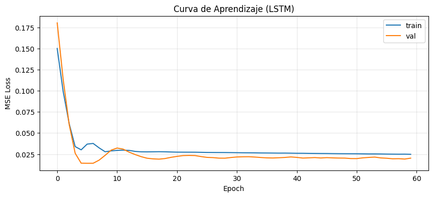
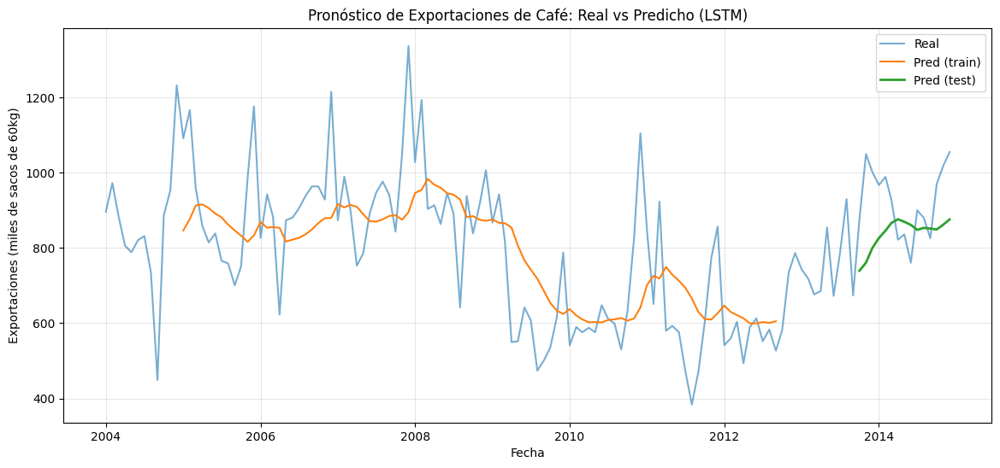

Superando el Olvido: LSTM (Long Short-Term Memory) 🧠🔋#
En el notebook anterior usamos una SimpleRNN para pronosticar exportaciones de café. Usualmente, ese modelo:
sigue bien la tendencia inmediata,
pero se queda corto para patrones de más largo plazo (picos estacionales, ciclos climáticos).
Esto no es “culpa” de los datos: es una limitación típica del entrenamiento de RNNs llamada:
👉 Gradiente desvaneciente (vanishing gradient)
En este notebook vamos a:
entender la intuición del problema,
ver la idea de LSTM (compuertas + autopista de memoria),
entrenar una LSTM con el mismo pipeline del caso café,
comparar resultados vs SimpleRNN (métricas + gráfica).
1. El problema: ¿por qué una RNN “olvida”?#
Piensa en el juego del teléfono roto:
con pocas personas, el mensaje llega bien;
con muchas, el mensaje se degrada hasta perderse.
En entrenamiento (BPTT), el gradiente se propaga hacia atrás multiplicando muchos términos.
Si esos términos tienen magnitud menor que 1, el gradiente se hace cada vez más pequeño:
Consecuencia: los pesos dejan de recibir señal útil desde pasos lejanos → la red aprende principalmente de lo reciente.
En series de tiempo esto se traduce en “memoria corta”: la red tiende a copiar o suavizar el pasado reciente.
2. La idea LSTM: una autopista de memoria + compuertas#
Una LSTM introduce un estado adicional llamado cell state (estado de celda), que funciona como una “autopista” para que la información viaje a través del tiempo con menos degradación.
La actualización se controla con compuertas (gates), que son básicamente “válvulas” entre 0 y 1 (sigmoide):
Forget gate: qué parte del pasado se conserva
Input gate: qué información nueva se escribe
Output gate: qué parte de la memoria se expone como salida
Metáfora del ejecutivo 👔#
Imagina un ejecutivo que revisa reportes mes a mes:
Decide qué archivar (olvidar / mantener),
qué anotar como información nueva,
y qué reportar para decidir hoy.
📌 Por eso LSTM suele manejar mejor dependencias largas (estacionalidad/ciclos).
3. Preparación de datos (idéntica al caso anterior)#
Para comparar de forma justa, repetimos exactamente el mismo pipeline del notebook 3:
lectura de
Exportaciones.xlsxsplit temporal 80/20
MinMaxScalerfit solo en trainventana deslizante
LOOK_BACK=12
import numpy as np
import pandas as pd
import matplotlib.pyplot as plt
from pathlib import Path
from sklearn.preprocessing import MinMaxScaler
# -----------------------------
# Robust path resolution
# -----------------------------
CANDIDATE_PATHS = [
Path("data/Exportaciones.xlsx"),
Path("../data/Exportaciones.xlsx"),
Path("../../data/Exportaciones.xlsx"),
Path("Exportaciones.xlsx"),
]
DATA_PATH = None
for p in CANDIDATE_PATHS:
if p.exists():
DATA_PATH = p
break
if DATA_PATH is None:
raise FileNotFoundError(
"Could not find 'Exportaciones.xlsx'. "
"Place it in 'data/Exportaciones.xlsx' (recommended) or alongside this notebook."
)
df = pd.read_excel(DATA_PATH)
df["Fechas"] = pd.to_datetime(df["Fechas"])
df = df.set_index("Fechas").sort_index()
values = df[["Exportaciones"]].values.astype(float)
def create_supervised_windows(series_2d: np.ndarray, look_back: int) -> tuple[np.ndarray, np.ndarray]:
"""
Build supervised learning windows from a univariate time series.
Args:
series_2d: Array of shape (T, 1)
look_back: Number of past time steps to use
Returns:
X: Array of shape (N, look_back, 1)
y: Array of shape (N, 1)
"""
if series_2d.ndim != 2 or series_2d.shape[1] != 1:
raise ValueError(f"Expected shape (T, 1), got {series_2d.shape}")
X_list, y_list = [], []
for i in range(len(series_2d) - look_back):
X_list.append(series_2d[i : i + look_back, 0])
y_list.append(series_2d[i + look_back, 0])
X = np.array(X_list, dtype=float).reshape(-1, look_back, 1)
y = np.array(y_list, dtype=float).reshape(-1, 1)
return X, y
LOOK_BACK = 12
split_idx = int(len(values) * 0.80)
train_vals = values[:split_idx]
test_vals = values[split_idx:]
scaler = MinMaxScaler(feature_range=(0, 1))
train_scaled = scaler.fit_transform(train_vals)
test_scaled = scaler.transform(test_vals)
X_train, y_train = create_supervised_windows(train_scaled, LOOK_BACK)
X_test, y_test = create_supervised_windows(test_scaled, LOOK_BACK)
print("X_train:", X_train.shape, "y_train:", y_train.shape)
print("X_test :", X_test.shape, "y_test :", y_test.shape)
print("Date range:", df.index.min().date(), "→", df.index.max().date())
X_train: (93, 12, 1) y_train: (93, 1)
X_test : (15, 12, 1) y_test : (15, 1)
Date range: 2004-01-01 → 2014-12-01
4. Modelo LSTM en Keras#
El cambio a nivel de API es pequeño (cambiar SimpleRNN por LSTM), pero internamente la LSTM tiene más parámetros porque maneja:
estado oculto (
h_t)estado de celda (
c_t)compuertas (forget/input/output)
📌 Reto conceptual: cuando veas model.summary(), ¿por qué crees que aumentan tanto los parámetros?
import tensorflow as tf
from tensorflow.keras.models import Sequential
from tensorflow.keras.layers import LSTM, Dense
tf.random.set_seed(42)
model = Sequential([
LSTM(units=50, activation="tanh", input_shape=(LOOK_BACK, 1)),
Dense(1)
])
model.compile(optimizer="adam", loss="mse")
model.summary()
WARNING:tensorflow:From C:\Users\legion\AppData\Local\Packages\PythonSoftwareFoundation.Python.3.11_qbz5n2kfra8p0\LocalCache\local-packages\Python311\site-packages\keras\src\losses.py:2976: The name tf.losses.sparse_softmax_cross_entropy is deprecated. Please use tf.compat.v1.losses.sparse_softmax_cross_entropy instead.
WARNING:tensorflow:From C:\Users\legion\AppData\Local\Packages\PythonSoftwareFoundation.Python.3.11_qbz5n2kfra8p0\LocalCache\local-packages\Python311\site-packages\keras\src\layers\rnn\lstm.py:148: The name tf.executing_eagerly_outside_functions is deprecated. Please use tf.compat.v1.executing_eagerly_outside_functions instead.
WARNING:tensorflow:From C:\Users\legion\AppData\Local\Packages\PythonSoftwareFoundation.Python.3.11_qbz5n2kfra8p0\LocalCache\local-packages\Python311\site-packages\keras\src\optimizers\__init__.py:309: The name tf.train.Optimizer is deprecated. Please use tf.compat.v1.train.Optimizer instead.
Model: "sequential"
_________________________________________________________________
Layer (type) Output Shape Param #
=================================================================
lstm (LSTM) (None, 50) 10400
dense (Dense) (None, 1) 51
=================================================================
Total params: 10451 (40.82 KB)
Trainable params: 10451 (40.82 KB)
Non-trainable params: 0 (0.00 Byte)
_________________________________________________________________
5. Entrenamiento#
Las LSTM suelen tardar un poco más (más parámetros), pero también pueden generalizar mejor cuando hay patrones largos.
Mantendremos un número de épocas ligeramente mayor para dar chance a converger.
history = model.fit(
X_train, y_train,
validation_data=(X_test, y_test),
epochs=60,
batch_size=32,
verbose=1
)
plt.figure(figsize=(10, 4))
plt.plot(history.history["loss"], label="train")
plt.plot(history.history["val_loss"], label="val")
plt.title("Curva de Aprendizaje (LSTM)")
plt.xlabel("Epoch")
plt.ylabel("MSE Loss")
plt.grid(True, alpha=0.3)
plt.legend()
plt.show()
Epoch 1/60
WARNING:tensorflow:From C:\Users\legion\AppData\Local\Packages\PythonSoftwareFoundation.Python.3.11_qbz5n2kfra8p0\LocalCache\local-packages\Python311\site-packages\keras\src\utils\tf_utils.py:492: The name tf.ragged.RaggedTensorValue is deprecated. Please use tf.compat.v1.ragged.RaggedTensorValue instead.
3/3 [==============================] - 2s 241ms/step - loss: 0.1500 - val_loss: 0.1802
Epoch 2/60
3/3 [==============================] - 0s 28ms/step - loss: 0.0989 - val_loss: 0.1131
Epoch 3/60
3/3 [==============================] - 0s 17ms/step - loss: 0.0611 - val_loss: 0.0600
Epoch 4/60
3/3 [==============================] - 0s 20ms/step - loss: 0.0339 - val_loss: 0.0260
Epoch 5/60
3/3 [==============================] - 0s 20ms/step - loss: 0.0301 - val_loss: 0.0143
Epoch 6/60
3/3 [==============================] - 0s 20ms/step - loss: 0.0369 - val_loss: 0.0142
Epoch 7/60
3/3 [==============================] - 0s 19ms/step - loss: 0.0377 - val_loss: 0.0142
Epoch 8/60
3/3 [==============================] - 0s 24ms/step - loss: 0.0324 - val_loss: 0.0179
Epoch 9/60
3/3 [==============================] - 0s 22ms/step - loss: 0.0278 - val_loss: 0.0236
Epoch 10/60
3/3 [==============================] - 0s 20ms/step - loss: 0.0288 - val_loss: 0.0297
Epoch 11/60
3/3 [==============================] - 0s 21ms/step - loss: 0.0294 - val_loss: 0.0322
Epoch 12/60
3/3 [==============================] - 0s 19ms/step - loss: 0.0297 - val_loss: 0.0309
Epoch 13/60
3/3 [==============================] - 0s 20ms/step - loss: 0.0294 - val_loss: 0.0274
Epoch 14/60
3/3 [==============================] - 0s 17ms/step - loss: 0.0282 - val_loss: 0.0245
Epoch 15/60
3/3 [==============================] - 0s 19ms/step - loss: 0.0278 - val_loss: 0.0221
Epoch 16/60
3/3 [==============================] - 0s 20ms/step - loss: 0.0277 - val_loss: 0.0202
Epoch 17/60
3/3 [==============================] - 0s 18ms/step - loss: 0.0278 - val_loss: 0.0194
Epoch 18/60
3/3 [==============================] - 0s 19ms/step - loss: 0.0279 - val_loss: 0.0191
Epoch 19/60
3/3 [==============================] - 0s 18ms/step - loss: 0.0278 - val_loss: 0.0198
Epoch 20/60
3/3 [==============================] - 0s 31ms/step - loss: 0.0275 - val_loss: 0.0212
Epoch 21/60
3/3 [==============================] - 0s 20ms/step - loss: 0.0274 - val_loss: 0.0224
Epoch 22/60
3/3 [==============================] - 0s 19ms/step - loss: 0.0273 - val_loss: 0.0233
Epoch 23/60
3/3 [==============================] - 0s 18ms/step - loss: 0.0273 - val_loss: 0.0235
Epoch 24/60
3/3 [==============================] - 0s 19ms/step - loss: 0.0273 - val_loss: 0.0233
Epoch 25/60
3/3 [==============================] - 0s 19ms/step - loss: 0.0272 - val_loss: 0.0221
Epoch 26/60
3/3 [==============================] - 0s 16ms/step - loss: 0.0270 - val_loss: 0.0212
Epoch 27/60
3/3 [==============================] - 0s 25ms/step - loss: 0.0270 - val_loss: 0.0209
Epoch 28/60
3/3 [==============================] - 0s 17ms/step - loss: 0.0269 - val_loss: 0.0203
Epoch 29/60
3/3 [==============================] - 0s 16ms/step - loss: 0.0269 - val_loss: 0.0202
Epoch 30/60
3/3 [==============================] - 0s 18ms/step - loss: 0.0268 - val_loss: 0.0210
Epoch 31/60
3/3 [==============================] - 0s 23ms/step - loss: 0.0267 - val_loss: 0.0217
Epoch 32/60
3/3 [==============================] - 0s 24ms/step - loss: 0.0266 - val_loss: 0.0219
Epoch 33/60
3/3 [==============================] - 0s 20ms/step - loss: 0.0266 - val_loss: 0.0220
Epoch 34/60
3/3 [==============================] - 0s 19ms/step - loss: 0.0265 - val_loss: 0.0216
Epoch 35/60
3/3 [==============================] - 0s 17ms/step - loss: 0.0264 - val_loss: 0.0210
Epoch 36/60
3/3 [==============================] - 0s 25ms/step - loss: 0.0263 - val_loss: 0.0206
Epoch 37/60
3/3 [==============================] - 0s 17ms/step - loss: 0.0263 - val_loss: 0.0205
Epoch 38/60
3/3 [==============================] - 0s 22ms/step - loss: 0.0262 - val_loss: 0.0207
Epoch 39/60
3/3 [==============================] - 0s 16ms/step - loss: 0.0262 - val_loss: 0.0211
Epoch 40/60
3/3 [==============================] - 0s 24ms/step - loss: 0.0261 - val_loss: 0.0217
Epoch 41/60
3/3 [==============================] - 0s 24ms/step - loss: 0.0260 - val_loss: 0.0212
Epoch 42/60
3/3 [==============================] - 0s 21ms/step - loss: 0.0260 - val_loss: 0.0204
Epoch 43/60
3/3 [==============================] - 0s 18ms/step - loss: 0.0259 - val_loss: 0.0206
Epoch 44/60
3/3 [==============================] - 0s 23ms/step - loss: 0.0258 - val_loss: 0.0209
Epoch 45/60
3/3 [==============================] - 0s 19ms/step - loss: 0.0258 - val_loss: 0.0205
Epoch 46/60
3/3 [==============================] - 0s 14ms/step - loss: 0.0257 - val_loss: 0.0209
Epoch 47/60
3/3 [==============================] - 0s 28ms/step - loss: 0.0256 - val_loss: 0.0206
Epoch 48/60
3/3 [==============================] - 0s 23ms/step - loss: 0.0255 - val_loss: 0.0204
Epoch 49/60
3/3 [==============================] - 0s 17ms/step - loss: 0.0255 - val_loss: 0.0203
Epoch 50/60
3/3 [==============================] - 0s 17ms/step - loss: 0.0255 - val_loss: 0.0198
Epoch 51/60
3/3 [==============================] - 0s 24ms/step - loss: 0.0254 - val_loss: 0.0197
Epoch 52/60
3/3 [==============================] - 0s 19ms/step - loss: 0.0253 - val_loss: 0.0206
Epoch 53/60
3/3 [==============================] - 0s 17ms/step - loss: 0.0252 - val_loss: 0.0211
Epoch 54/60
3/3 [==============================] - 0s 18ms/step - loss: 0.0252 - val_loss: 0.0215
Epoch 55/60
3/3 [==============================] - 0s 20ms/step - loss: 0.0252 - val_loss: 0.0205
Epoch 56/60
3/3 [==============================] - 0s 19ms/step - loss: 0.0251 - val_loss: 0.0201
Epoch 57/60
3/3 [==============================] - 0s 24ms/step - loss: 0.0250 - val_loss: 0.0195
Epoch 58/60
3/3 [==============================] - 0s 18ms/step - loss: 0.0249 - val_loss: 0.0196
Epoch 59/60
3/3 [==============================] - 0s 18ms/step - loss: 0.0250 - val_loss: 0.0192
Epoch 60/60
3/3 [==============================] - 0s 18ms/step - loss: 0.0248 - val_loss: 0.0203

6. Predicción, métricas y visualización#
Usaremos métricas en escala real:
RMSE
MAE
Y una gráfica comparando:
Real
Pred train (aprendizaje)
Pred test (pronóstico)
from sklearn.metrics import mean_absolute_error, mean_squared_error
train_pred = model.predict(X_train, verbose=0)
test_pred = model.predict(X_test, verbose=0)
# Back to real scale
y_train_real = scaler.inverse_transform(y_train)
y_test_real = scaler.inverse_transform(y_test)
train_pred_real = scaler.inverse_transform(train_pred)
test_pred_real = scaler.inverse_transform(test_pred)
def rmse(y_true: np.ndarray, y_hat: np.ndarray) -> float:
return float(np.sqrt(mean_squared_error(y_true, y_hat)))
train_rmse = rmse(y_train_real, train_pred_real)
test_rmse = rmse(y_test_real, test_pred_real)
train_mae = float(mean_absolute_error(y_train_real, train_pred_real))
test_mae = float(mean_absolute_error(y_test_real, test_pred_real))
print(f"Train RMSE: {train_rmse:.2f} | Train MAE: {train_mae:.2f}")
print(f" Test RMSE: {test_rmse:.2f} | Test MAE: {test_mae:.2f}")
Train RMSE: 150.08 | Train MAE: 114.51
Test RMSE: 135.88 | Test MAE: 114.97
plt.figure(figsize=(14, 6))
plt.plot(df.index, df["Exportaciones"].values, label="Real", alpha=0.6)
full_real = df["Exportaciones"].values.reshape(-1, 1)
train_plot = np.full_like(full_real, fill_value=np.nan, dtype=float)
test_plot = np.full_like(full_real, fill_value=np.nan, dtype=float)
# Align predictions on the full timeline
train_plot[LOOK_BACK:split_idx, 0] = train_pred_real[:, 0]
test_start = split_idx + LOOK_BACK
test_end = test_start + len(test_pred_real)
test_plot[test_start:test_end, 0] = test_pred_real[:, 0]
plt.plot(df.index, train_plot[:, 0], label="Pred (train)")
plt.plot(df.index, test_plot[:, 0], label="Pred (test)", linewidth=2)
plt.title("Pronóstico de Exportaciones de Café: Real vs Predicho (LSTM)")
plt.xlabel("Fecha")
plt.ylabel("Exportaciones (miles de sacos de 60kg)")
plt.grid(True, alpha=0.3)
plt.legend()
plt.show()

7. Conclusiones: SimpleRNN vs LSTM#
En general:
SimpleRNN: memoria corta → tiende a seguir lo más reciente, puede “rezagarse”.
LSTM: memoria controlada → suele capturar mejor estacionalidad y dependencias largas.
¿Por qué esto importa para el café?#
Ciclo anual: cosecha principal vs mitaca
Ciclo climático: fenómenos como El Niño/La Niña (2–7 años)
Una SimpleRNN puede perder señal de eventos lejanos.
La LSTM está diseñada para conservar (cuando conviene) información por más tiempo.
8. Reto final#
Compara tus resultados (RMSE/MAE y gráfica) con el notebook anterior (SimpleRNN).
Prueba con distintos
LOOK_BACK(por ejemplo 6, 12, 24).
Pregunta guía:
¿Con qué ventana la LSTM empieza a capturar mejor la estacionalidad sin sobreajustar?